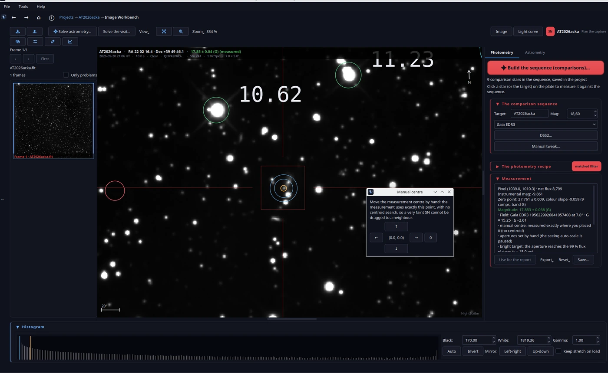
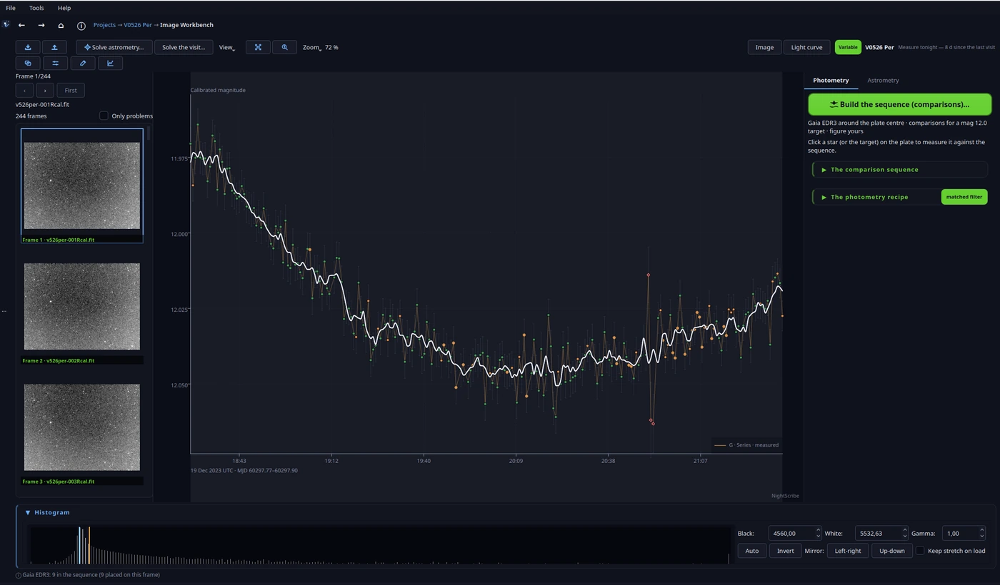
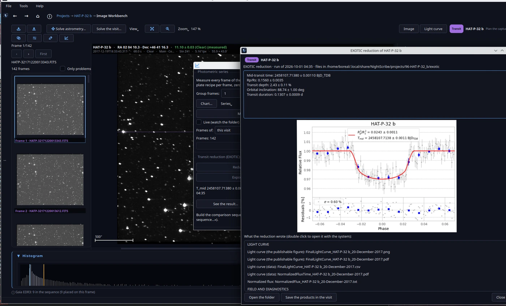

06. Fotometría







La fotometría vive en el editor FITS (Herramientas → NightScribe Image Workbench, o al abrir una placa desde una visita). La idea central: mides contra una secuencia de estrellas de comparación con magnitudes de catálogo, y todo lo que mides queda registrado en el proyecto.
La secuencia de comparación
Construir la secuencia (comparsas)… consulta los catálogos (Gaia, APASS, VSX) alrededor del centro de la placa y propone las comparaciones de una vez. La propuesta evita las estrellas más brillantes del campo y busca un brillo parecido al de tu objetivo.
¿Por qué no las estrellas más brillantes del campo? Porque la mejor comparación es la que se parece al objetivo: brillo similar (mismo régimen del sensor, sin riesgo de saturación) y, idealmente, color similar. Una estrella brillante cerca de saturar no calibra nada: su flujo ya no es proporcional a la luz que llegó. Y una del campo cruzada con VSX puede ser, ella misma, una variable: por eso la secuencia cruza con el catálogo de variables antes de proponerla.
Medir en una placa
Clic en una estrella (o en el objetivo) y la app la mide contra la secuencia. La receta de medida tiene tres decisiones que conviene entender:
Filtro adaptado (activado por defecto en placas nuevas): pesa cada píxel por la forma de la estrella en vez de contar un círculo plano.
Aperturas: radio de apertura y anillo de cielo, en píxeles. El botón Sugerir propone radios a partir de la curva de crecimiento del propio objetivo y del entorno (crowding, gradiente de fondo), con las razones en lenguaje llano.
Centro manual (sin centroide): para una SN muy débil o el núcleo de una galaxia, donde el centroide automático puede irse al pico equivocado. El centro que pongas se usa exactamente, sin refinamiento.
¿Por qué el matched filter es el defecto? Porque lee alrededor de 1,6 veces más relación señal-ruido que una apertura circular simple, y no subestima las estrellas débiles (el sesgo clásico de la apertura cuando el fondo domina). Si tu placa tiene píxeles malos o una PSF muy rara, desmárcalo y vuelve a la apertura: la física manda sobre la costumbre.
Avanzado… abre el resto de la receta (modelo de cielo, sigma-clip, término de color, sustracción de galaxia anfitriona). Cada placa guarda su propia receta: cambiarla en una no toca las demás.
Guardar… registra el punto calibrado en el proyecto (caerá en la curva de luz y en el resumen de campaña). Exportar da el CSV de los puntos y el reporte AAVSO EFF, el formato que la AAVSO acepta para variables.
La serie fotométrica
Medir la secuencia mide todos los frames de la visita como una serie: un punto por frame, con cero de punto por frame (atado por las comparadas, no por una sola), errores honestos de fotones + ganancia + ruido de lectura, y flags de calidad por punto (saturado, rayo cósmico, foco, nube, desalineado).
¿Por qué un cero de punto por frame y no uno para toda la noche? Porque la transparencia cambia (cirros, humedad, extinción con la altura). Atarlo por comparada en cada frame convierte la variación atmosférica en una corrección en vez de en un error. La contrapartida: si tus comparadas son pocas o malas, el cero de punto hereda su ruido; los flags naranjas te lo dicen.
Reglas de la casa, para que confíes en la curva:
Un flag marca, nunca borra: un punto dudoso se señala y puedes ocultarlo o excluirlo, pero sigue existiendo y puedes restaurarlo.
Agrupar tomas combina N frames por punto en el dominio de la medida (flujos con pesos 1/σ²), nunca apilando píxeles. 1 = un punto por frame, lo normal en tránsitos y variables rápidas.
¿Por qué combinar flujos y no apilar imágenes? Porque apilar mezcla tiempos, fondos y PSF de frames distintos antes de medir; combinar las medidas conserva el tiempo exacto de cada punto y deja que el peso estadístico haga el trabajo. El resultado es el mismo SNR, sin perder información temporal.
Deshacer esta ejecución borra solo los puntos de la última pasada; Pasadas de esta visita… deja volver a una pasada anterior sin borrar nada.
Leer la curva (el diálogo Carta…)
El diálogo de la curva cambia lo que ves, nunca lo medido. Lo esencial:
Escala: CALIBRATED (magnitudes reales) o Δ MAGNITUDE (todo referido a un nivel, para que una décima de magnitud llene el gráfico).
Robusta y Fijar rango: que el eje siga el núcleo de la curva (un punto anómalo no aplana el resto) o fijarlo a mano.
Errores: barras de error de fotones por punto y la banda del cero de punto. El sistemático del ZP es de toda la noche, así que se dibuja como banda, nunca como barra por punto.
Colores de calidad / Ocultar marcados: colorea cada punto por su calidad (verde limpio, naranja usable, rojo en duda) u oculta los rojos.
Binning de la gráfica: agrupa los puntos del gráfico (presentación); es independiente del agrupado de frames de la medida.
Marcar anómalos: señala los puntos que se separan de sus vecinos más de N sigmas robustas (4,5 solo los salvajes; 3,0 también los sospechosos). Excluirlos es una decisión aparte, explícita.
Período y fase
Período y fase (en el diálogo de la curva, o desde el proyecto) busca el período de una variable con dos métodos: Lomb-Scargle (ajusta una sinusoide y da probabilidad de falsa alarma) y PDM (no asume forma de curva; es el contraste correcto para eclipses). «Both» corre los dos y te dice si coinciden.
El informe dice lo encontrado y, sobre todo, lo que los datos no pueden decir: ciclos cubiertos, probabilidad de falsa alarma, alias. Guardar el período en el proyecto pliega la curva por ese período desde entonces; Exportar el informe… escribe el PNG y el CSV.
¿Por qué dos métodos? Lomb-Scargle es potente cuando la curva parece una sinusoide (RR Lyrae, δ Scuti), pero un eclipse algoliano (dos mínimos de distinta profundidad, mesetas planas) no es sinusoidal y su período verdadero puede aparecer como un alias débil. PDM no asume nada: pliega y mide la dispersión. Si ambos coinciden, el período es sólido; si no, el informe te dice por qué.
¿Por qué «una noche no fija un período»? Con una sola noche cubres una fracción de ciclo y el periodograma devuelve alias del día sidéreo. El botón Añadir la curva de la comunidad… suma las observaciones AAVSO de la estrella (en gris, nunca mezcladas con las tuyas) y repite la búsqueda: así se fijan los períodos de verdad.
Tránsitos de exoplanetas
Para un proyecto de tránsito, el editor añade el bloque EXOTIC: NightScribe prepara el inits.json (con tus datos de observatorio y cámara de Configuración), ejecuta EXOTIC en su propio entorno si lo configuraste, importa su curva y sus parámetros, y exporta el archivo de 3 columnas para ExoClock con el ExoClock_info.txt relleno. También puedes ajustar el tránsito dentro de la app (modelo con limb darkening cuadrático) para una estimación rápida del T_mid antes de enviar nada.
¿Por qué ExoClock? Porque la misión Ariel de la ESA necesita saber cuándo transita cada planeta dentro de unos años, y los tránsitos derivan. Tu curva, aunque sea de un telescopio de 20 cm, actualiza la efeméride de un planeta que un telescopio espacial observará.
Siguiente: 07. Astrometría.